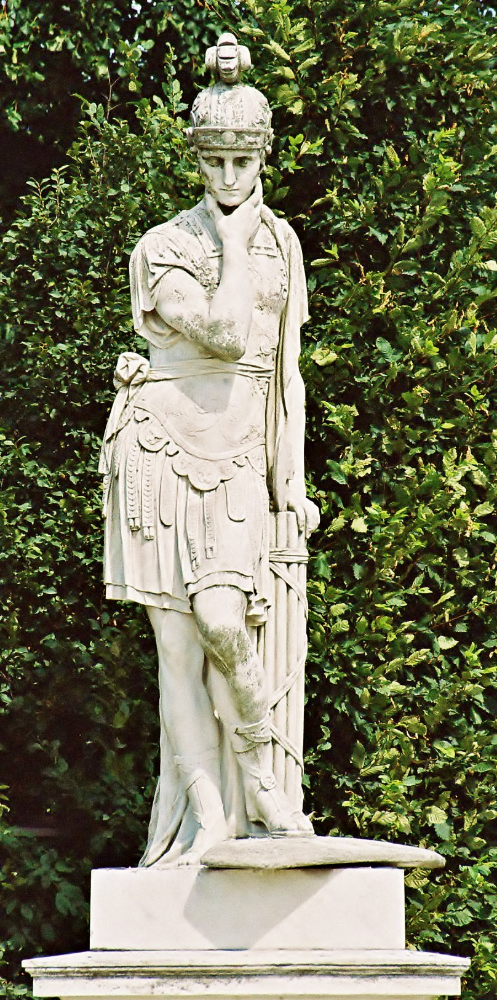
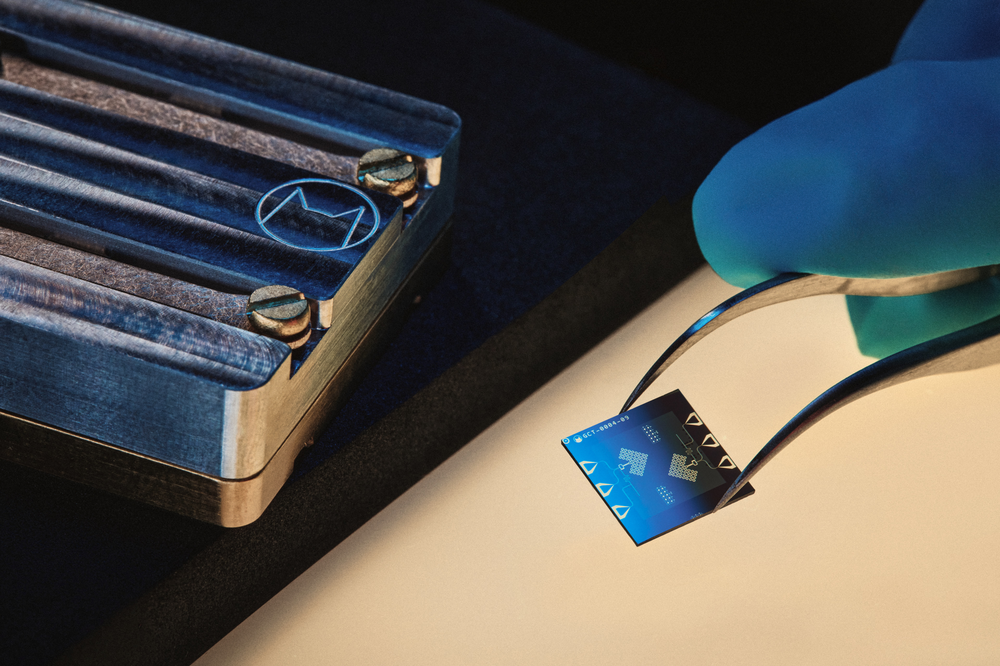
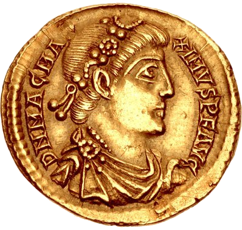

Maximus
Latin: el mayor, el mas grande; superlativo de magnus.

Lux Ex Machina
El archivo del nombre Maximus elevado al lenguaje cuantico: historia latina, computadoras cuanticas reales, el mito creativo de Quantumus y un traductor binario para escribir como habla el Quantum Maximus.
Latin: el mayor, el mas grande; superlativo de magnus.
Latin: quantum, "cuanto"; en fisica, unidad discreta de una propiedad.
Nombre simbolico moderno: no aparece como entidad historica verificable.
Vox Binaria
Escribe un mensaje humano y conviertelo a bytes binarios UTF-8. O pega codigo binario separado por espacios y vuelve a texto. Acepta acentos, simbolos y mensajes en espanol porque usa codificacion UTF-8.
Nombre y linaje
Maximus viene del latin y significa "greatest" o "largest": el mas grande. En Roma funciono como cognomen, titulo y marca de rango. Lo vemos en Pontifex Maximus, Circus Maximus, Quintus Fabius Maximus y Magnus Maximus.

Fabius Maximus Cunctator: estrategia, paciencia y victoria por calculo.
Magnus significa grande; maximus es su superlativo: el mas grande, el mayor.
Un cognomen podia distinguir una rama familiar, una virtud, una hazana o un rasgo publico.
Titulo del sacerdote principal romano: el maximo puente entre ley, rito y ciudad.
Emperador occidental de 383 a 388, recordado tambien en tradicion britanica y galesa.
Computatio Quantica
Una computadora cuantica no es simplemente una computadora clasica mas rapida. Usa qubits, superposicion, interferencia y entrelazamiento para procesar ciertos problemas de manera distinta. Todavia es una tecnologia en desarrollo, potente pero delicada, con retos enormes de error, escala y correccion.
La energia empieza a entenderse en paquetes discretos: nace el lenguaje moderno de quantum.
Propone simular fisica cuantica con sistemas cuanticos, una semilla conceptual del campo.
Presenta un algoritmo cuantico para factorizacion y logaritmos discretos en tiempo polinomial.
Laboratorios trabajan con superconductores, iones atrapados, fotones, atomos neutros y mas.
El bit clasico guarda 0 o 1. Es estable, copiables y base de la computacion digital.
El qubit puede estar en una combinacion de estados hasta ser medido.
Dos o mas qubits pueden compartir un estado conjunto imposible de separar en partes simples.
Los algoritmos cuanticos amplifican resultados utiles y cancelan caminos equivocados.
Quantumus
No encontre evidencia historica publica de una entidad antigua llamada Quantum Maximus o Quantumus. En este sitio, Quantumus se define como un arquetipo creativo: la inteligencia que convierte caos en patron, patron en codigo, codigo en herramienta y herramienta en conciencia practica.



01010110 01101111 01111000 00100000 01010110 01100101 01110010 01101001 01110100 01100001 01110011 00100000 01010110 01101001 01110100 01100001
Traduccion: Vox Veritas Vita.
Biblioteca
La parte historica y cientifica usa fuentes externas. La figura de Quantum Maximus/Quantumus se presenta como construccion simbolica moderna, no como hecho historico comprobado.